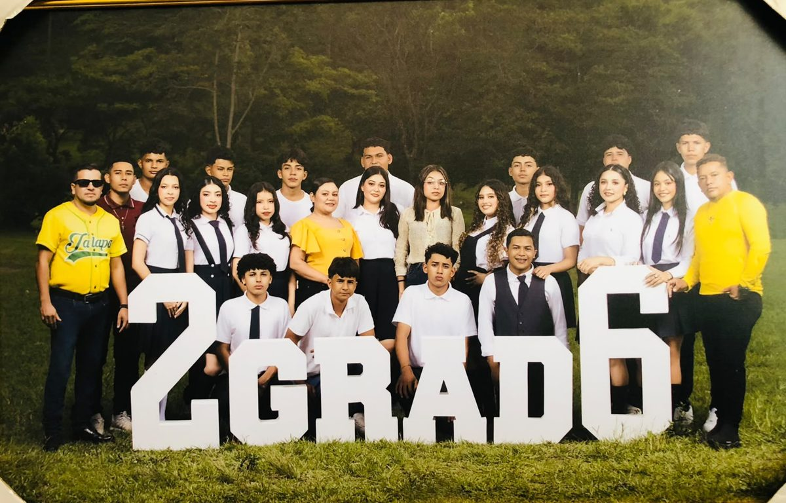
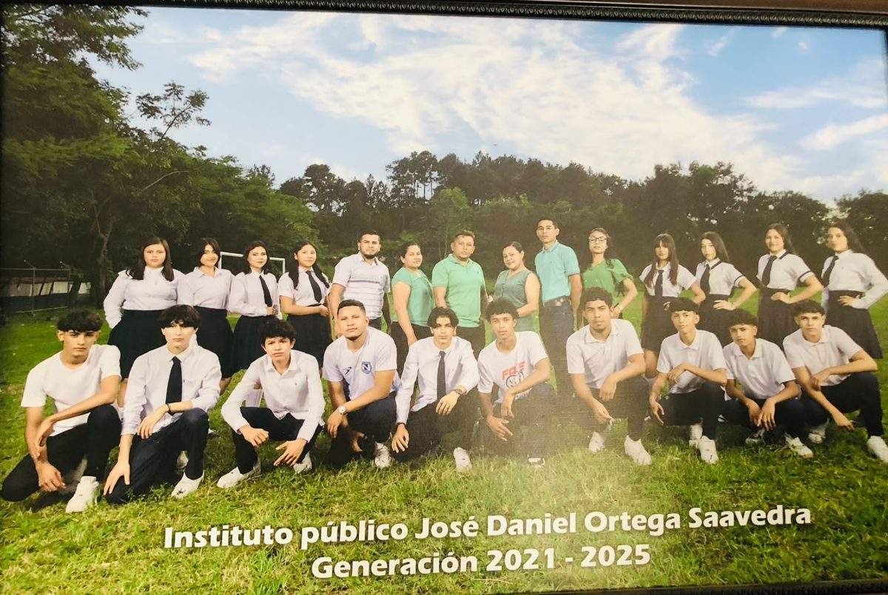
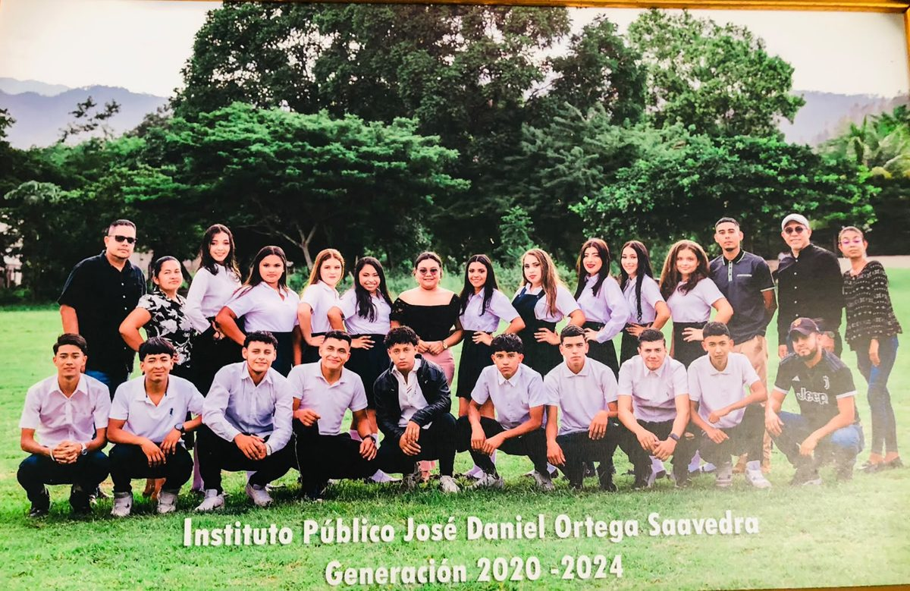
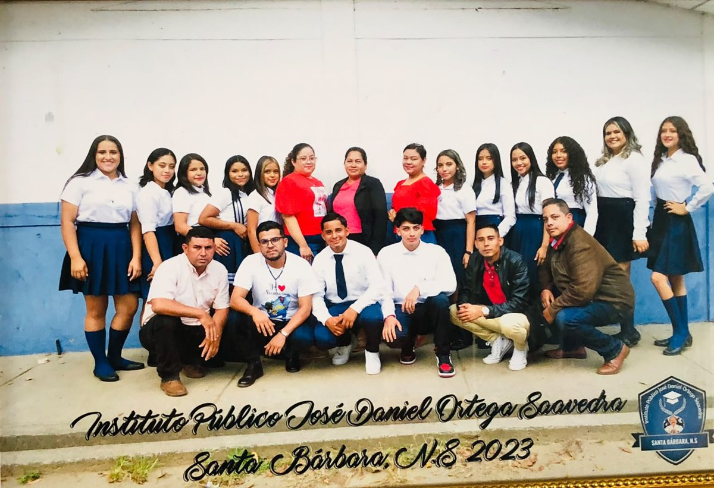
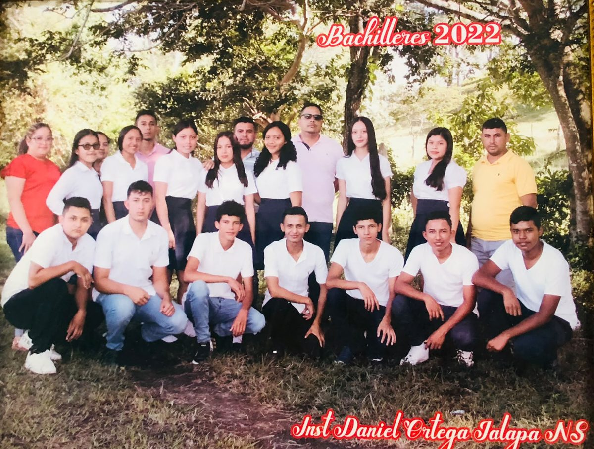
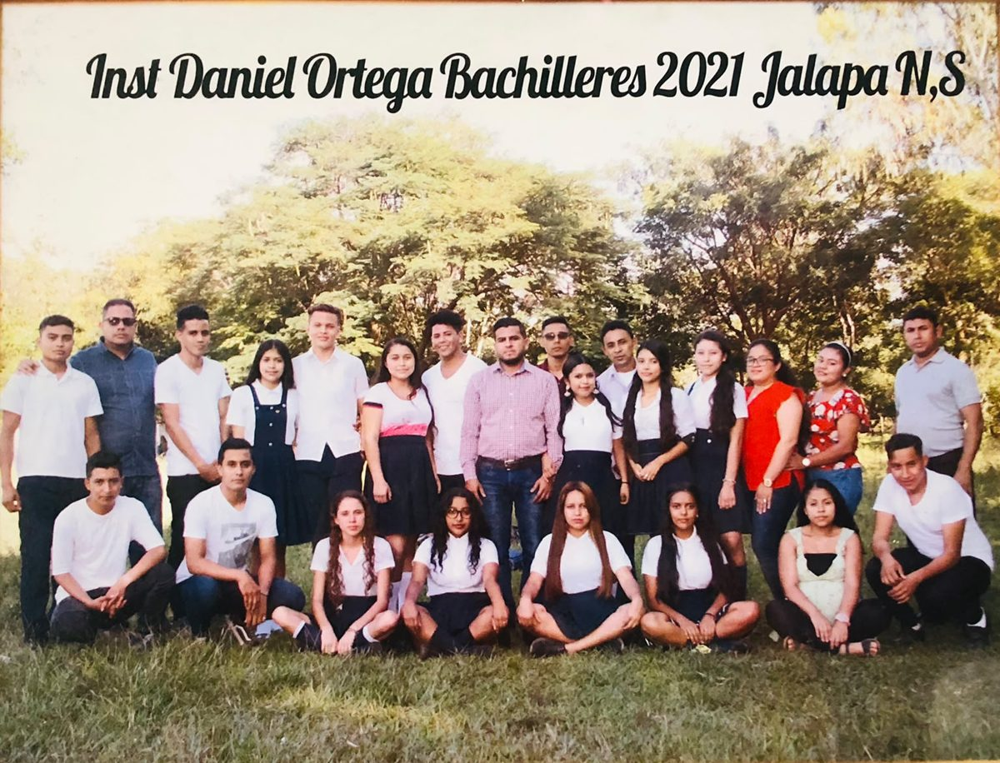
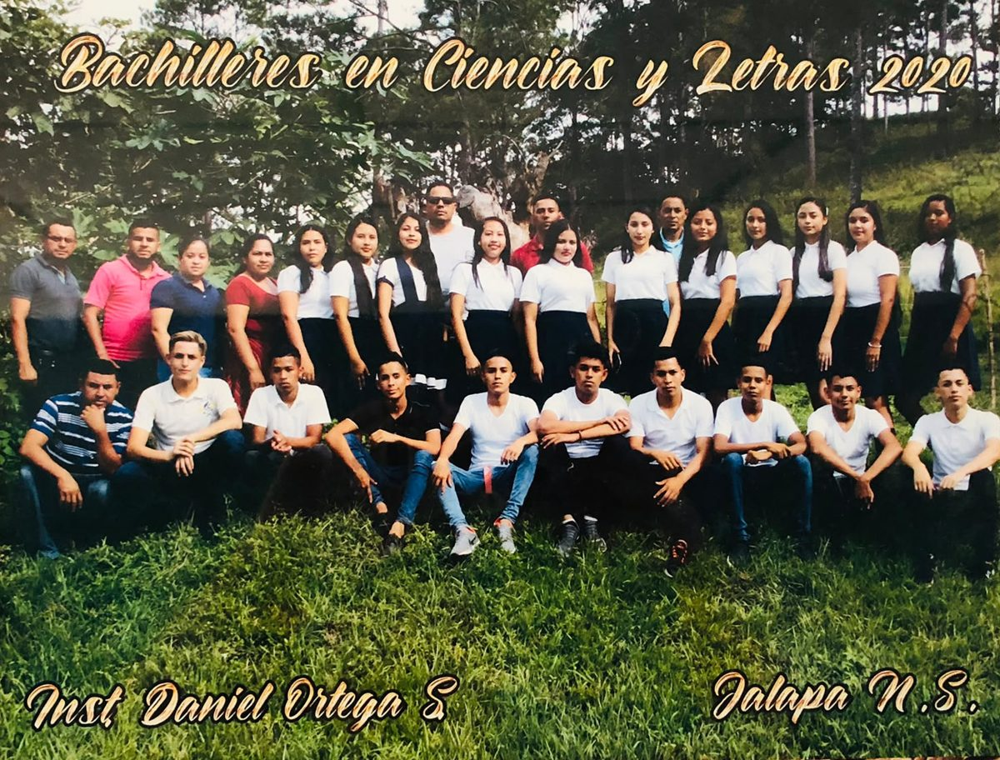
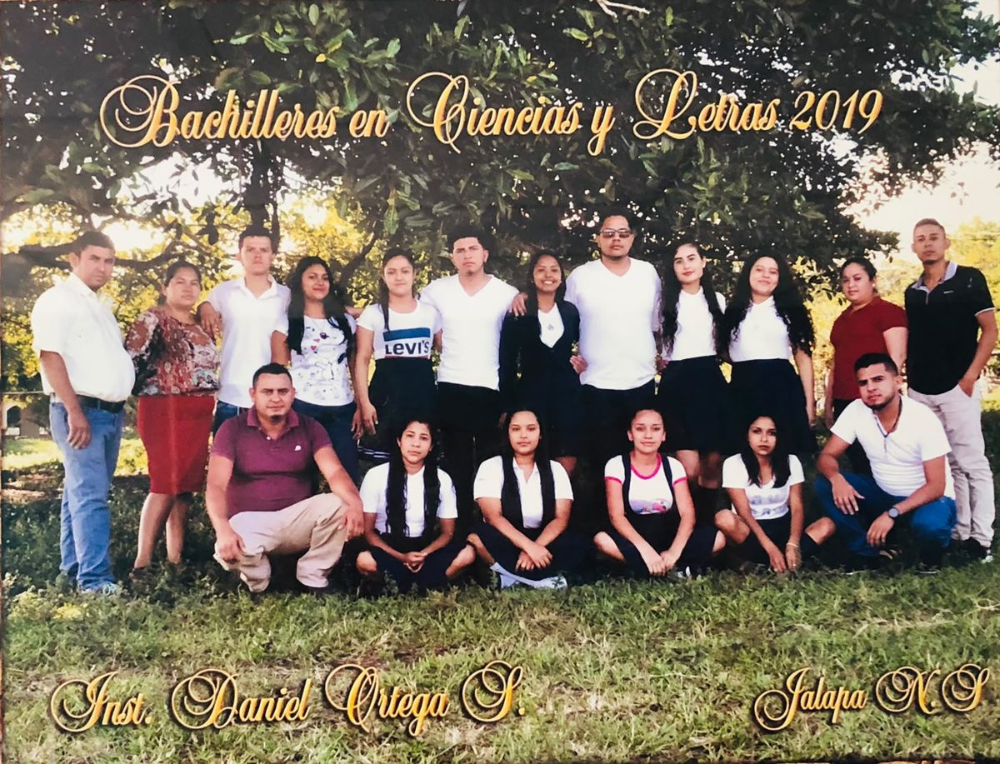
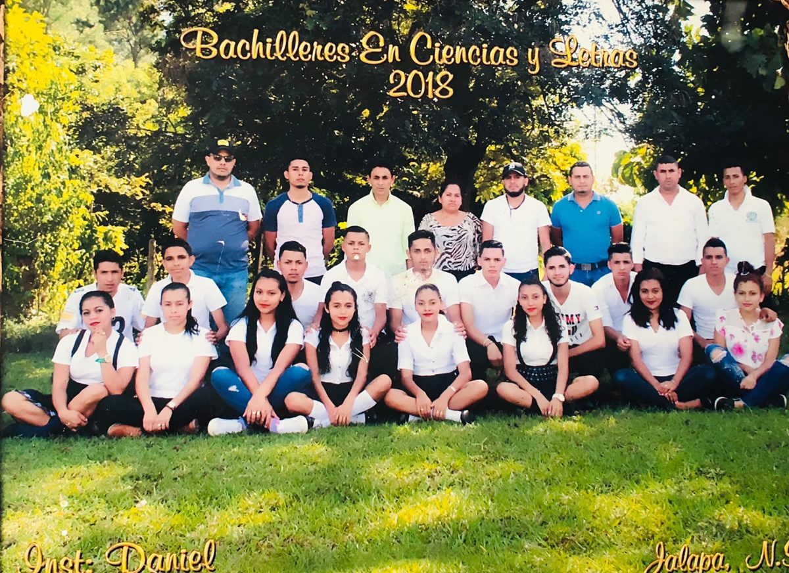

Instituto Público José Daniel Ortega Saavedra
Formando estudiantes con valores y conocimientos.
-
Educación gratuitaInstituto público, sin costo
-
12:15 p. m. a 5:15 p. m.Horario de atención
-
8495 0711Llámanos o escríbenos
Quiénes somos
El Instituto Público José Daniel Ortega Saavedra es un centro de educación secundaria ubicado en Santa Bárbara, Jalapa, Nueva Segovia. Por ser un instituto público, la educación que brindamos es completamente gratuita y está abierta a todas las y los jóvenes de la comunidad que quieran estudiar y superarse.
Nuestro compromiso es formar estudiantes con valores y conocimientos, acompañándolos en su paso por la secundaria hasta que culminan como bachilleres.
Misión
Brindar educación secundaria pública y gratuita de calidad, formando estudiantes con valores, conocimientos y habilidades para la vida, que les permitan continuar sus estudios y contribuir al desarrollo de su comunidad.
Visión
Ser un instituto reconocido en nuestra comunidad por la formación integral de sus estudiantes, con una educación inclusiva, innovadora y comprometida con los valores, el aprendizaje y el uso responsable de la tecnología.
Oferta educativa
- Educación Secundaria Formación de secundaria para las y los jóvenes de la comunidad, hasta culminar como bachilleres.
- Pública y gratuita Al ser un instituto público, estudiar con nosotros no tiene costo.
- Grados Aquí podrán cursar toda su secundaria (7mo, 8vo, 9no, 10mo y 11mo).
Matrícula
Requisitos para matrícula de nuevo ingreso y reingreso
Para matricular a tu hijo o hija, ya sea de nuevo ingreso o de reingreso, presenta estos documentos en el instituto:
-
Partida de nacimientoDel estudiante.
-
Copia de cédula de los padresFotocopia legible de la cédula de identidad.
-
Hoja de trasladoEn caso de Nuevo ingreso
-
Foto Copia de BoletinEn caso de Reingreso
Preguntas frecuentes
¿Cuánto cuesta estudiar en el instituto?
Nada. Al ser un instituto público, la educación es completamente gratuita.
¿Qué grados se pueden cursar?
Toda la secundaria: 7mo, 8vo, 9no, 10mo y 11mo, hasta culminar como bachiller.
¿Qué documentos necesito para matricular?
Partida de nacimiento, copia de cédula de los padres y hoja de traslado del centro donde estudiaba antes, en original.
Galería: Nuestros bachilleres
Nuestras promociones de bachilleres de los últimos años.

Bachilleres 2026 
Bachilleres 2025 
Bachilleres 2024 
Bachilleres 2023 
Bachilleres 2022 
Bachilleres 2021 
Bachilleres 2020 
Bachilleres 2019 
Bachilleres 2018
Contacto
- Dirección
- Santa Bárbara, Jalapa, Nueva Segovia, Nicaragua.
- Teléfono
- 8495 0711
- Horario de atención
- 12:15 p. m. a 5:15 p. m.
Síguenos en Facebook
Mira las noticias, actividades y avisos del instituto en nuestra página.
Ir a la página de FacebookCómo llegar
- Toma la carretera Panamericana hasta Santa Bárbara.
- En Santa Bárbara encontrarás el campo de fútbol.
- Entra al campo: el instituto está al fondo.